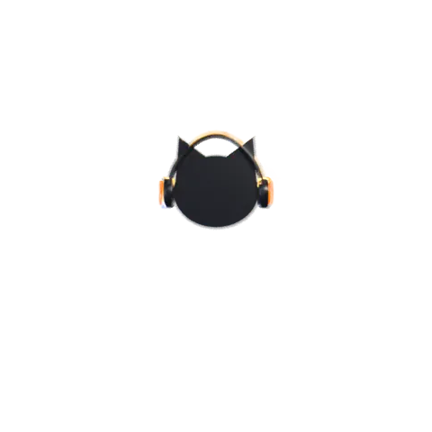

Bloqueas el móvil, lo guardas en el bolsillo y sigue sonando, con «Siguiente» en la pantalla de bloqueo. En YouTube eso es Premium; aquí, gratis.
Importas tu biblioteca de Spotify (el archivo de «Descargar tus datos» o el enlace de una lista), YouTube Music y Amazon Music (un CSV). Sin anuncios, saltas las que quieras y, al acabar, suena otra canción de verdad, no la misma en otra subida.
El vídeo en la calidad que elijas o solo el sonido, como archivos normales en tu galería y en tu música. No caducan.
Pestañas, también en el móvil; dos vídeos a la vez con una ventanita flotante; y un minirreproductor que se esconde sin cortar la música.
Y distingue una avería de un «¿eres un bot?» de YouTube, para no actualizarse en balde.
«Para ti» hecho con lo que ves y tus canales, que no se acaba; suscripciones por fecha, sin algoritmo, con «No vistos»; explorar por temas; buscador con filtros y voz; Shorts; y «Para Nut», vídeos para gatos.
Calidad (la que eliges es la que ves), velocidad, subtítulos, capítulos, transcripción con buscador, comentarios, cola y listas, repetir, temporizador, directos, imagen en imagen y modo ambiente.
Historial con buscador (pausar o borrar), Ver más tarde, Me gusta y listas. «Traer mi YouTube» copia tus canales, historial, me gusta y listas; también desde Google Takeout. Compartir desde el minuto en el que vas.
Doble toque para saltar 10 s, deslizar para minimizar, girar para pantalla completa (con candado). En el ordenador, los atajos de YouTube, vista previa al pasar el ratón, modo cine y pestañas con botón central.
Elige tu sistema. Cada paquete trae dentro todo lo que necesita y, una vez instalada, Cat-ode se actualiza sola.
Móviles y tabletas con Android 11 o más.
Descargar (9 MB)La primera actualización pide un toque; las demás llegan solas.
Ordenadores con Windows de 64 bits.
Descargar (150 MB)Ubuntu, Debian, Linux Mint, Pop!_OS, Zorin, elementary…
Descargar el .deb (153 MB)Desde la terminal es una sola orden: sudo apt install ./cat-ode_amd64.deb
Cualquier otro Linux (Fedora, Arch, openSUSE…)
Descargar el AppImage (301 MB)De momento no hay versión: en iPhone y iPad Apple no deja instalar aplicaciones de fuera de su tienda, y la de Mac aún no está hecha.